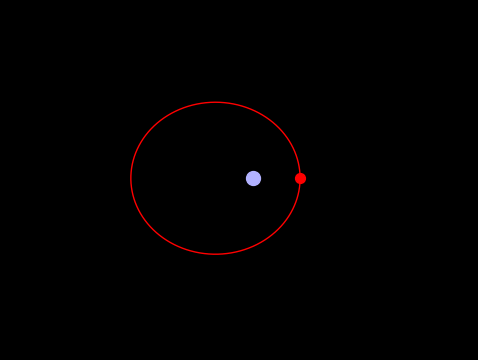

Python Orbital Simulator
Quantitative Engineering Analysis II Course Project
This Python program takes in an initial position and velocity for a satellite of a given mass and plots its projected orbit around the Earth. It does this through both numerical and equation based methods then compares the two results.
My piece of the project was understanding and explaining the various equations and proofs that led up to a definition of orbital position with respect to time. I then helped plug these resultant equations into the Python code that produced a graphical result in GIF form.
This project was a personal favorite as I was able to take the intuition that I already had on orbital mechanics and apply that to actual vector mathematics on the subject.